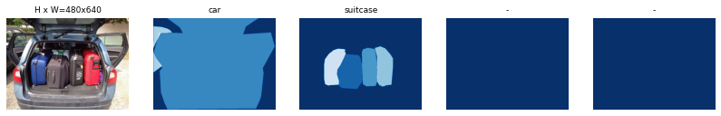
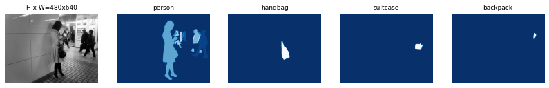
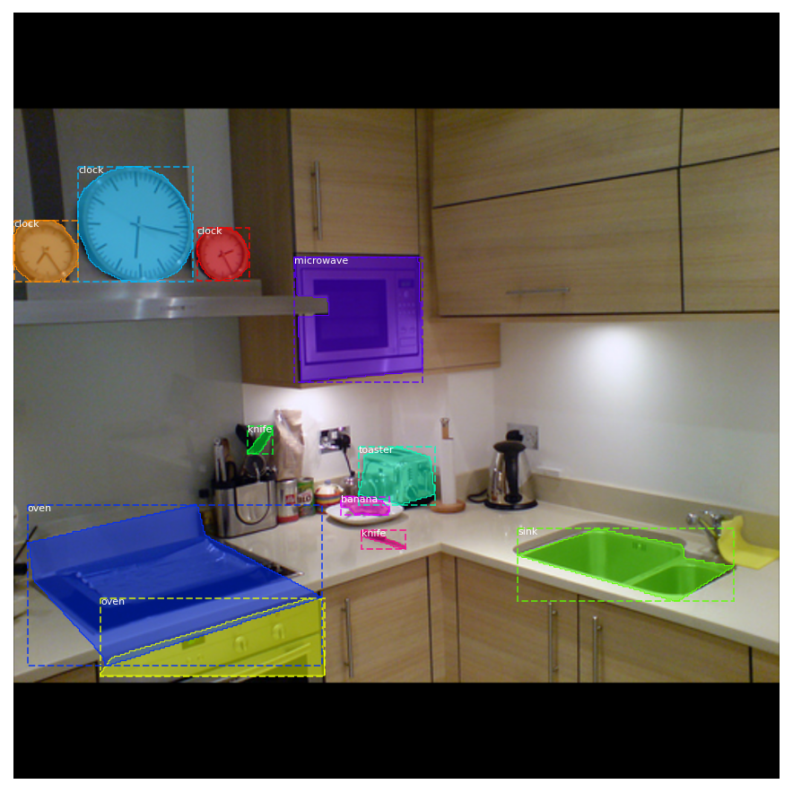
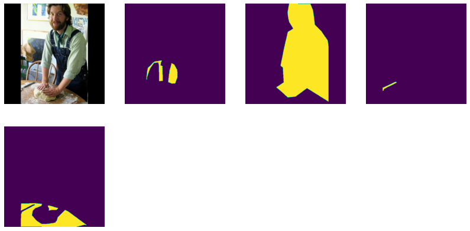
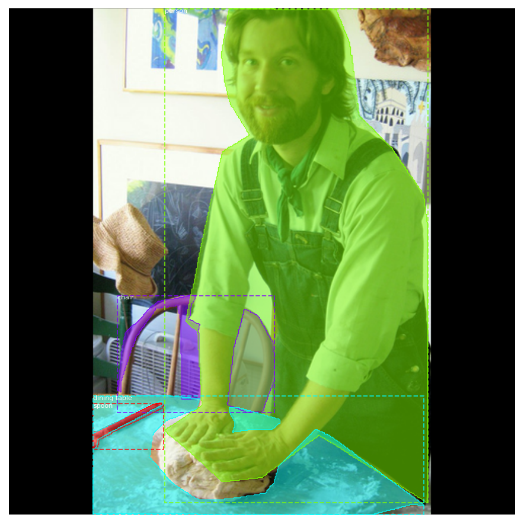
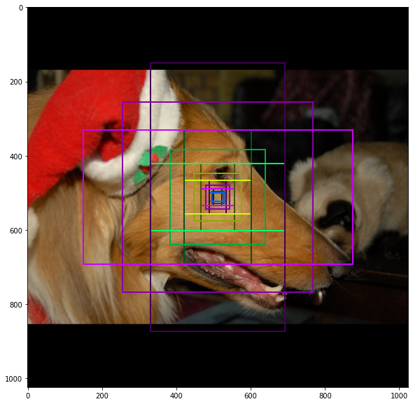

Python 3.6.6 |Anaconda, Inc.| (default, Jun 28 2018, 11:27:44) [MSC v.1900 64 bit (AMD64)]
Type "copyright", "credits" or "license" for more information.
IPython 7.16.1 -- An enhanced Interactive Python.
In [1]: runfile('D:/YJ/MyRepo/Mask_RCNN-tf2/coco_inspect_data.py', wdir='D:/YJ/MyRepo/Mask_RCNN-tf2')
2020-12-10 02:48:39.175879: I tensorflow/stream_executor/platform/default/dso_loader.cc:44] Successfully opened dynamic library cudart64_101.dll
loading annotations into memory...
Done (t=13.14s)
creating index...
index created!
Image Count: 82081
Class Count: 81
0. BG
1. person
2. bicycle
3. car
4. motorcycle
5. airplane
6. bus
7. train
8. truck
9. boat
10. traffic light
11. fire hydrant
12. stop sign
13. parking meter
14. bench
15. bird
16. cat
17. dog
18. horse
19. sheep
20. cow
21. elephant
22. bear
23. zebra
24. giraffe
25. backpack
26. umbrella
27. handbag
28. tie
29. suitcase
30. frisbee
31. skis
32. snowboard
33. sports ball
34. kite
35. baseball bat
36. baseball glove
37. skateboard
38. surfboard
39. tennis racket
40. bottle
41. wine glass
42. cup
43. fork
44. knife
45. spoon
46. bowl
47. banana
48. apple
49. sandwich
50. orange
51. broccoli
52. carrot
53. hot dog
54. pizza
55. donut
56. cake
57. chair
58. couch
59. potted plant
60. bed
61. dining table
62. toilet
63. tv
64. laptop
65. mouse
66. remote
67. keyboard
68. cell phone
69. microwave
70. oven
71. toaster
72. sink
73. refrigerator
74. book
75. clock
76. vase
77. scissors
78. teddy bear
79. hair drier
80. toothbrush


image_id 44199 http://cocodataset.org/#explore?id=195579
image shape: (427, 640, 3) min: 0.00000 max: 255.00000 uint8
mask shape: (427, 640, 3) min: 0.00000 max: 1.00000 bool
class_ids shape: (3,) min: 20.00000 max: 20.00000 int32
bbox shape: (3, 4) min: 1.00000 max: 502.00000 int32
image_id: 59826 http://cocodataset.org/#explore?id=91942
Original shape: (375, 500, 3)
image shape: (1024, 1024, 3) min: 0.00000 max: 255.00000 uint8
mask shape: (1024, 1024, 11) min: 0.00000 max: 1.00000 bool
class_ids shape: (11,) min: 44.00000 max: 75.00000 int32
bbox shape: (11, 4) min: 0.00000 max: 963.00000 int32

image shape: (1024, 1024, 3) min: 0.00000 max: 255.00000 uint8
image_meta shape: (93,) min: 0.00000 max: 53498.00000 float64
class_ids shape: (4,) min: 1.00000 max: 61.00000 int32
bbox shape: (4, 4) min: 0.00000 max: 1024.00000 int32
mask shape: (1024, 1024, 4) min: 0.00000 max: 1.00000 bool


WARNING:root:'augment' is deprecated. Use 'augmentation' instead.
mask shape: (56, 56, 4) min: 0.00000 max: 1.00000 bool


Count: 261888
Scales: (32, 64, 128, 256, 512)
ratios: [0.5, 1, 2]
Anchors per Cell: 3
Levels: 5
Anchors in Level 0: 196608
Anchors in Level 1: 49152
Anchors in Level 2: 12288
Anchors in Level 3: 3072
Anchors in Level 4: 768
Level 0. Anchors: 196608 Feature map Shape: [256 256]
Level 1. Anchors: 49152 Feature map Shape: [128 128]
Level 2. Anchors: 12288 Feature map Shape: [64 64]
Level 3. Anchors: 3072 Feature map Shape: [32 32]
Level 4. Anchors: 768 Feature map Shape: [16 16]
rois shape: (4, 200, 4) min: 0.00000 max: 1023.00000 int32
mrcnn_class_ids shape: (4, 200, 1) min: 0.00000 max: 72.00000 int32
mrcnn_bbox shape: (4, 200, 81, 4) min: -4.22330 max: 3.26769 float32
mrcnn_mask shape: (4, 200, 28, 28, 81) min: 0.00000 max: 1.00000 float32
gt_class_ids shape: (4, 100) min: 0.00000 max: 72.00000 int32
gt_boxes shape: (4, 100, 4) min: 0.00000 max: 1024.00000 int32
gt_masks shape: (4, 56, 56, 100) min: 0.00000 max: 1.00000 bool
rpn_match shape: (4, 261888, 1) min: -1.00000 max: 1.00000 int32
rpn_bbox shape: (4, 256, 4) min: -7.07207 max: 3.65234 float64
image_id: 15509 http://cocodataset.org/#explore?id=22274
anchors shape: (261888, 4) min: -362.03867 max: 1322.03867 float64
refined_anchors shape: (3, 4) min: 92.99997 max: 928.00006 float32
Positive anchors: 3
Negative anchors: 253
Neutral anchors: 261632
BG : 134
bus : 66
Positive ROIs: 66
Negative ROIs: 134
Positive Ratio: 0.33
Unique ROIs: 200 out of 200



66 0.33
66 0.33
66 0.33
66 0.33
66 0.33
66 0.33
66 0.33
66 0.33
66 0.33
66 0.33
Average percent: 0.33
In [2]: